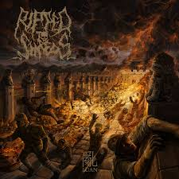
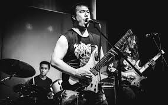

Ripped to Shreds es una banda de death metal fundada por Andrew Lee en 2016. Originalmente fue un proyecto de un solo hombre, con Lee encargándose de todos los instrumentos y la producción. Su sonido está fuertemente influenciado por el death metal de la vieja escuela, especialmente el estilo sueco y americano de los 90.
La música de Ripped to Shreds combina death metal crudo y agresivo con toques melódicos y brutales. Sus influencias incluyen bandas como Entombed, Dismember, Autopsy y Bolt Thrower. También incorporan elementos de la cultura china en sus letras y arte, reflejando las raíces de Andrew Lee.
En 2018 lanzaron su álbum debut 埋葬 (Mai-zang), el cual fue bien recibido en la escena underground del death metal. Le siguieron discos como 亂 (Luan) en 2020 y Jubian en 2022, consolidando su reputación como una de las bandas más prometedoras del género.
A pesar de ser una banda relativamente nueva, Ripped to Shreds ha logrado destacarse gracias a su sonido contundente y su dedicación al espíritu del death metal clásico. Su combinación de brutalidad y técnica ha captado la atención de fans y críticos por igual.
